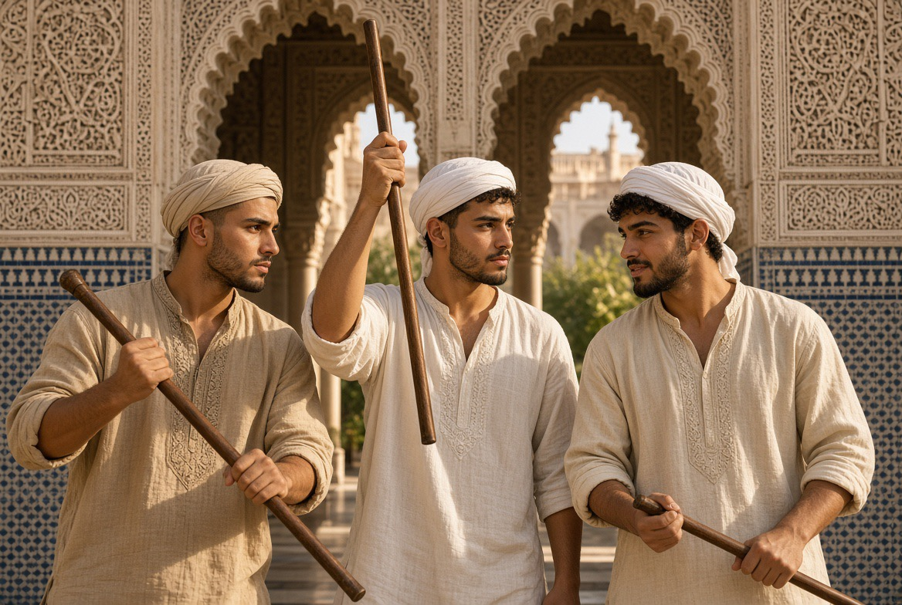
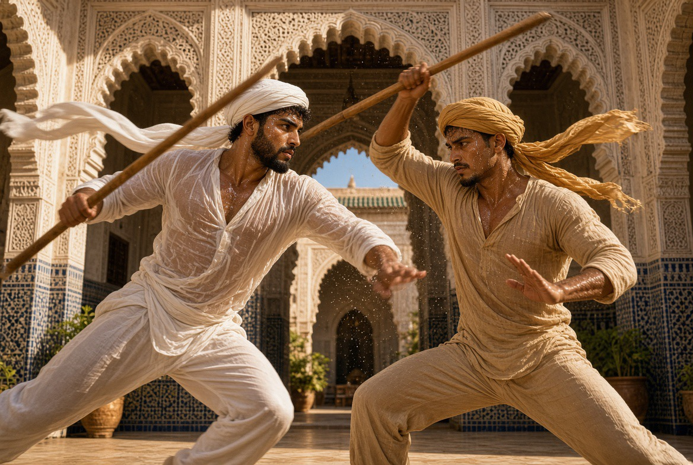
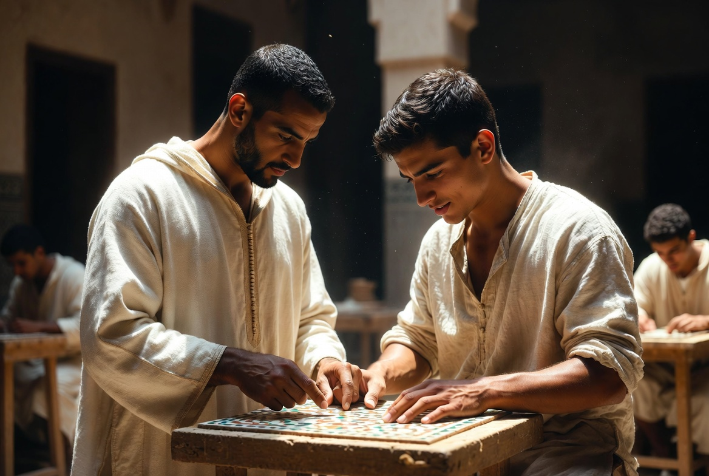
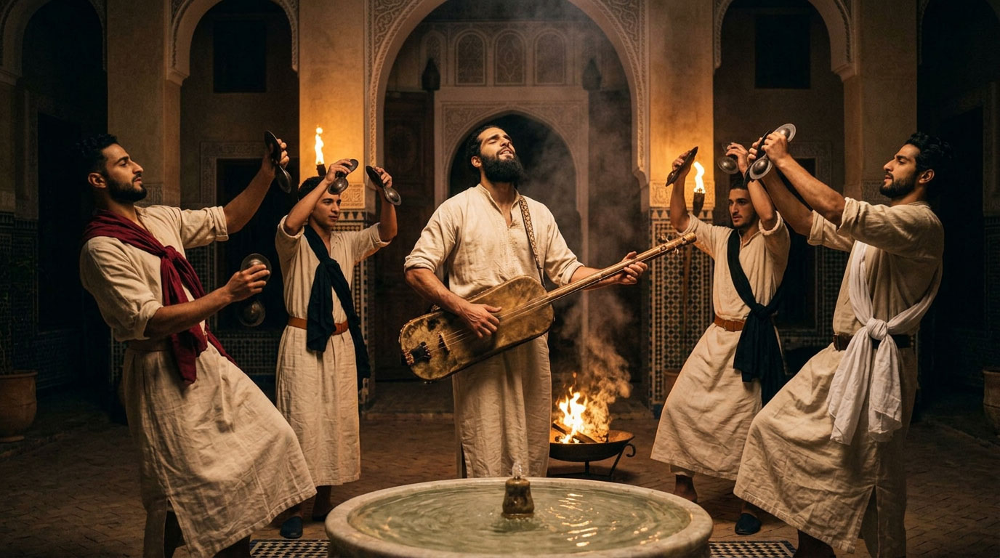
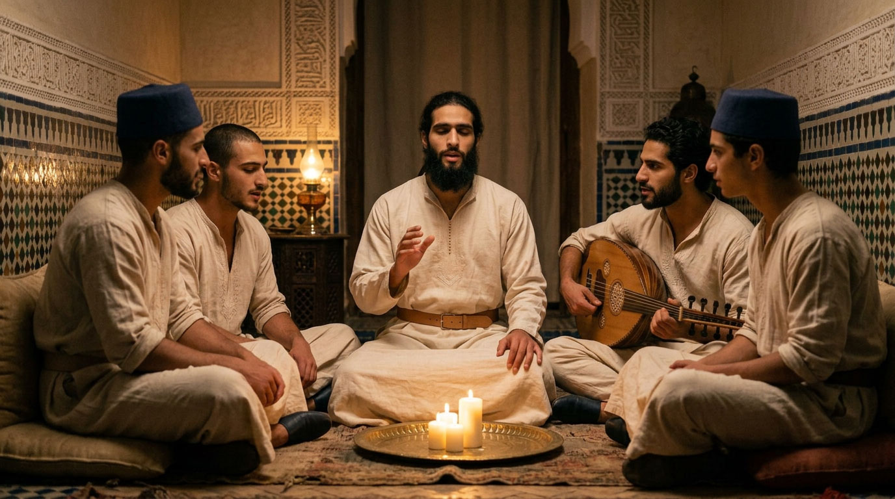

Choreutic discipline
Three gestures transmitted as a craft — the body, sung speech, rhythm — never a spectacle.

At Dar al-Hiraf, the body is learned like a material: through repetition, patience, and the quiet authority of a master. What follows brings together three disciplines of this kind — one governs gesture, another speech, the third rhythm.
DISCIPLINE OF THE BODY
Tahtib — The Art of the Staff

Born in ancient Egypt — traces of it are already found in pharaonic bas-reliefs — and still alive today in Upper Egypt, taḥṭīb is not a fight but a dialogue: two men, two staffs, a drum rhythm that governs every gesture. It is not a choreography learned to be shown; it is an exercise in precision, restraint and courage — mastery of the body always preceding mastery of the weapon.
It is in this spirit that it finds its place at Dar al-Hiraf, alongside the other disciplines: not as an attraction, but as a practice of measured courage.
The staff used, called ʿasa (عصا) or nabboud (نبوت), generally measures 1.20 to 1.50 metres — long enough to demand precise management of distance, too light to cause serious injury if handled with precision. The duel is played to a drum rhythm (tabla baladi, طبلة بلدي) that accelerates in stages: each change of tempo forces both men to read anew the space and the other's gesture. The winner is not the one who strikes hardest, but the one who touches without ever losing the measure.
وَلَقَدْ شَفى نَفسي وَأَبرَأَ سُقمَها
قَولُ الفَوارِسِ وَيْكَ عَنتَرَ أَقدِمِ
Wa-laqad shafā nafsī wa-abra'a suqmahā / qawlu-l-fawārisi wayka ʿAntara aqdimi
“My soul was healed, its ailment cured, by the horsemen's cry: ‘Courage, Antar, advance!’”
ʿAntarah ibn Shaddād — Muʿallaqa, 6th century
This verse, one of the most famous in all pre-Islamic poetry, belongs to the Muʿallaqa of ʿAntarah ibn Shaddād — the poet-horseman par excellence. It does not describe taḥṭīb itself, born in a wholly different region and a wholly different era; but the spirit it carries — the body finding its peace in mastered trial — is what this discipline seeks to transmit.
DISCIPLINE OF THE SUNG WORD
Malhun — The word that is transmitted

Born in the cities of Morocco — Tafilalt, Marrakech, Fez, Meknes, Salé — and recognised by UNESCO in 2023 as intangible cultural heritage of humanity, malḥūn is an art of rhythmic, sung speech, historically linked to the world of the medinas' craft guilds. A shaykh al-malḥūn transmits a repertoire to a few disciples, following the same rhythm of learning as zellige or calligraphy: the memory of the gesture passing from one mouth to another, from one generation to the next.
It is this direct kinship with the world of the workshop that makes malḥūn one of the most natural transmissions at Dar al-Hiraf.
The repertoire of malḥūn is built in qasida (قصيدة) — long poems, often of several dozen verses, sung a cappella and then taken up by a small ensemble (violin, ʿūd, percussion). Themes range from mystical love to the praise of the Prophet, by way of very concrete evocations of the artisanal world — tools, gestures, materials. Among the great names transmitted from generation to generation is Sidi Qaddour al-ʿAlami (18th century), still sung today in Fez and Meknes.
DISCIPLINE OF SOUND
Gnawa — the transmission of the maâlem

Carried by the three-stringed guembri and the metal qraqeb, gnawa is a music of transmission inherited from brotherhoods of sub-Saharan origin settled in Morocco for centuries — an oral repertoire, outside the written canon of classical Arabic poetry, but just as rigorous in its pedagogy. The master who teaches it bears a title that is no accident: maâlem — the same word as that of the master craftsman, mâalem zellige, mâalem menbut.
A single system of transmission, applied now to stone, now to wood, now to sound: it is this link that justifies its place at Dar al-Hiraf.
The complete gnawa ceremony, called lila (ليلة, “the night”), can last a whole night: it associates with each colour of cloth, each rhythm of the guembri, a precise spiritual entity that the chant comes to invoke and then appease. The maâlem gnawa does not merely play a repertoire: he leads the whole night, knowing when to slow, when to relaunch, when to close.
DISCIPLINE OF LISTENING
Sama — the listening that gathers

Samāʿ (سماع) — literally “listening” — designates, in the Sufi tradition, the gathered audition of chants and mystical poetry, practised to free the heart from the world's dispersion. In the Maghreb, this vigil takes the name of hadra (حضرة): collective dhikr, often in a circle, carried by the bendir and sometimes the nāy, with a measured swaying of the body — quite distinct from the rotation of the Mevlevi dervishes, an order born in Konya, in Anatolia, foreign to the tradition of the Riad.
Samāʿ never won unanimous approval: Māliki jurists, the dominant school in Morocco, long remained cautious toward instrumental music in worship, whereas al-Ghazālī, in his Iḥyāʾ ʿulūm al-dīn (إحياء علوم الدين), made one of the most influential defences of it — on condition that the intention remain pure. It is in this measured spirit, never in excess, that certain evening gatherings of the house close with a silent listening.
“The master does not show a step: he transmits a rhythm that the body must learn to carry alone.”
The body also finds its rest in silent listening — the samāʿ that closes certain evening gatherings of the house, whose forms and history deserve a closer look, above.
Write to usThe terms on this page are gathered in the glossary of the house.